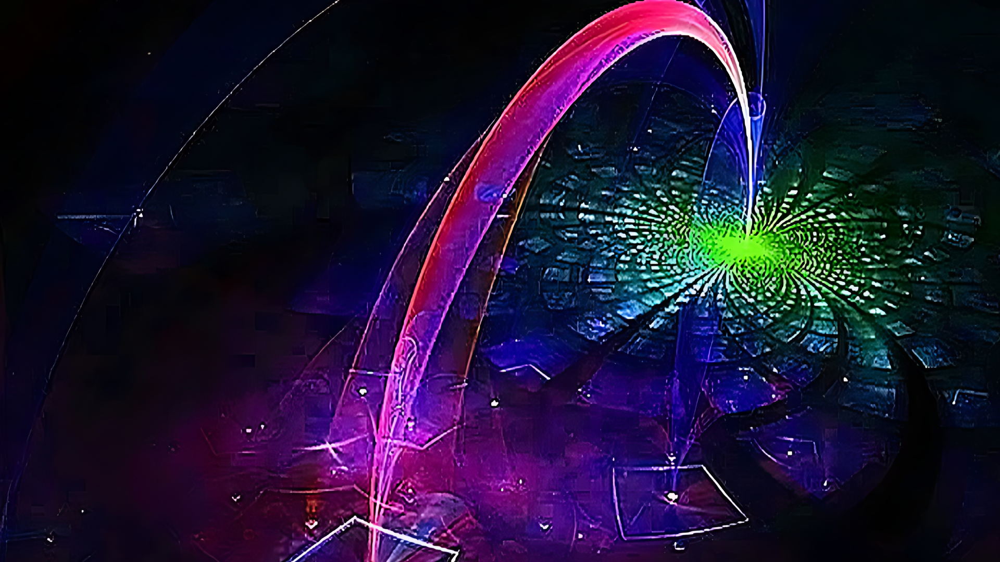

.svg)
Computação Quântica
Computação quântica usa princípios da mecânica quântica para resolver problemas complexos mais rapidamente que computadores tradicionais.

Computação quântica é um campo multidisciplinar que compreende aspectos da ciência da computação, da física e da matemática e que utiliza a mecânica quântica para resolver problemas complexos mais rapidamente do que em computadores tradicionais.
A tecnologia quântica é um novo campo da física e da engenharia, que dá a algumas das estranhas características da mecânica quântica, especialmente o entrelaçamento quântico e mais recentemente o tunelamento quântico aplicações práticas como a computação quântica, criptografia quântica, a simulação quântica, a metrologia quântica, o sensor quântico, e a imagem quântica.
O campo da tecnologia quântica foi descrito pela primeira vez em 1997 em um livro de Gerard J. Milburn, que se seguiu então de um artigo publicado em 2003 por Jonathan P. Dowling e Gerard J. Milburn, o termo apareceu também em outro artigo publicado no mesmo ano por David Deutsch.